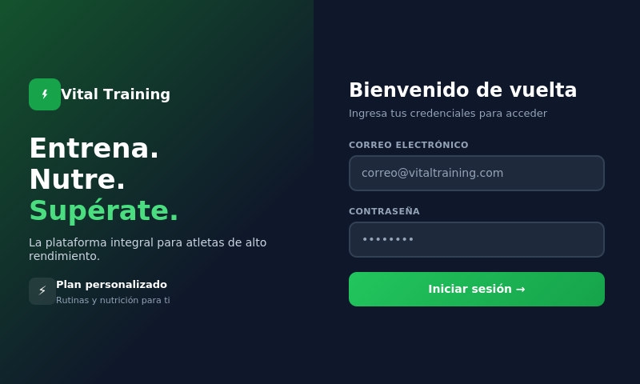
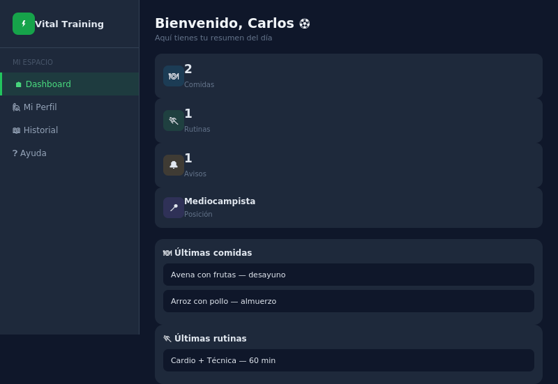
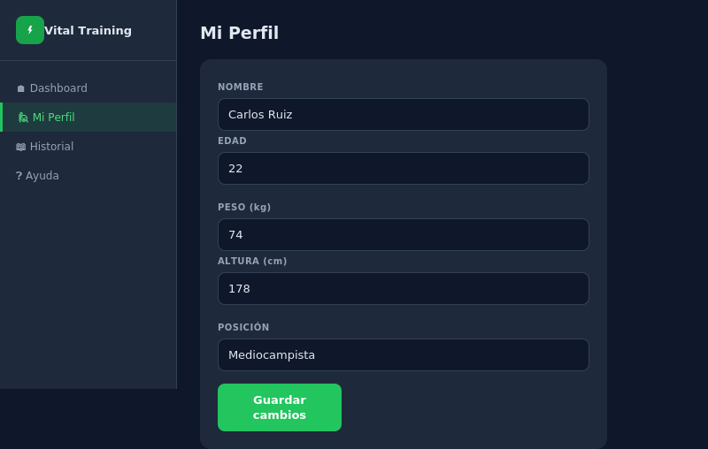
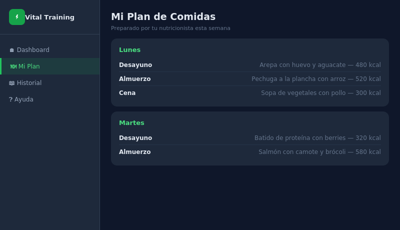
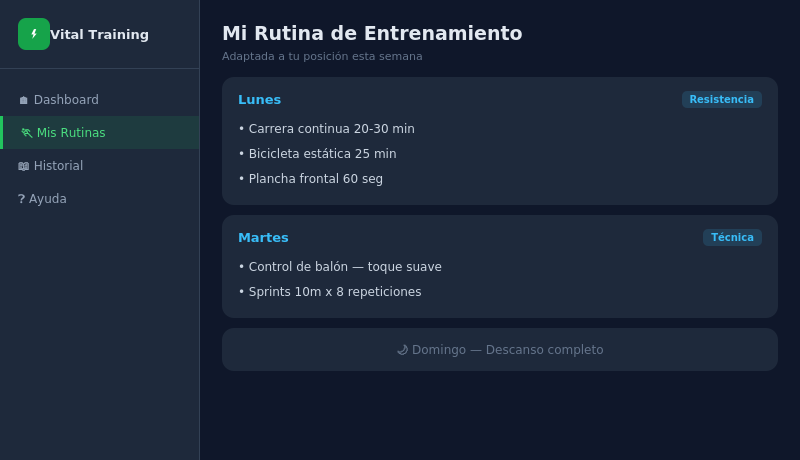
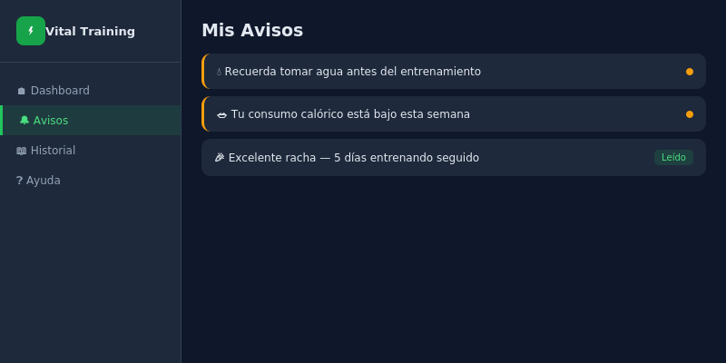
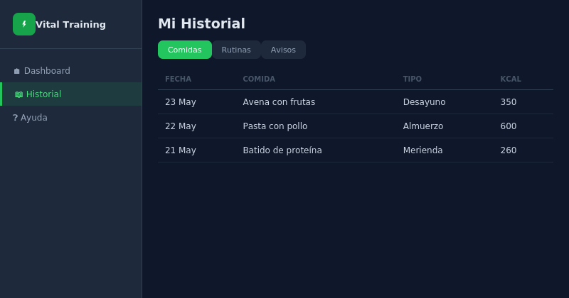
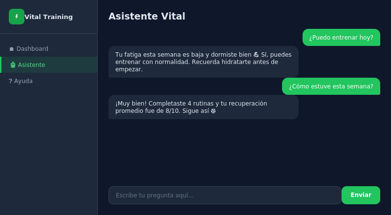

Cómo entrar a tu cuenta

Abre Vital Training. Vas a ver dos cajitas: una dice Correo electrónico y otra dice Contraseña.
Escribe tu correo en la primera cajita, y tu clave secreta en la segunda. Luego presiona el botón verde que dice Iniciar sesión →
Si escribes tu correo o clave mal, la pantalla te lo va a decir con un mensaje. No te preocupes, solo inténtalo de nuevo con calma.
Debajo del botón verde vas a ver un texto que dice ¿No tienes cuenta? Regístrate aquí. Tócalo.
Te va a pedir tu nombre, tu correo y una clave que tú inventes. Guarda esa clave en un lugar seguro, ¡la vas a necesitar cada vez que entres!
Nunca le des tu clave a otra persona, ni siquiera a un amigo. Es solo tuya.
Tu pantalla principal (Dashboard)

Cuando entras, esta es la primera pantalla que ves. Es como el resumen del día: te dice qué has comido, qué ejercicios hiciste, y si tienes algún aviso nuevo.
Vas a ver varias cajitas pequeñas con números. Cada una te dice algo distinto:
🍽️ Comidas recientes — cuántas comidas has registrado
🏃 Rutinas recientes — cuántos entrenamientos has hecho
🔔 Avisos sin leer — mensajes nuevos para ti
Tu perfil

Aquí guardas tus datos: tu nombre, tu edad, tu peso, tu altura y en qué posición juegas.
Para llegar aquí, busca en el menú de la izquierda el botón que dice
Toca dentro de la cajita que quieras cambiar (por ejemplo, tu peso), borra el número viejo y escribe el nuevo.
Cuando termines, busca el botón que dice Guardar y tócalo. Así tus cambios quedan guardados.
Tus comidas

Aquí puedes ver tu plan de comidas de la semana: qué desayunar, qué almorzar, qué cenar. Lo prepara tu nutricionista pensando en ti.
Si tienes alguna alergia (por ejemplo a los frutos secos), avísale a tu nutricionista para que la anote en tu perfil médico. Así el plan de comidas siempre la va a tener en cuenta.
Tus rutinas de entrenamiento

Aquí ves qué ejercicios te tocan cada día de la semana: cuántas series, cuántas repeticiones, y cuánto tiempo debes hacer cada uno.
Si un día dice Descanso, significa que ese día no hay que entrenar. ¡Descansar también es parte de mejorar!
Tus avisos

Aquí llegan mensajes importantes para ti, como recordatorios de tomar agua, o felicitaciones cuando llevas varios días entrenando seguido.
Si un aviso tiene un puntito de color, significa que todavía no lo has leído.
Tu historial

Aquí puedes ver todo lo que has hecho antes: comidas de días pasados, entrenamientos anteriores, y avisos viejos. Es como un cuaderno donde queda guardado todo tu camino.
El asistente

Es como un amigo dentro de la aplicación que conoce tus datos y te puede responder preguntas, como:
💬 "¿Puedo entrenar hoy?"
💬 "¿Cómo estuve esta semana?"
💬 "¿Estoy durmiendo bien?"
Solo escribe tu pregunta y el asistente te responde usando la información real que tienes guardada.
El asistente no es un doctor. Si te sientes mal de verdad, siempre habla con tu nutricionista o con un médico.
Preguntas que la gente hace mucho
Pídele a un administrador de tu equipo que te ayude a recuperarla, o pídele que te cree una nueva contraseña. Ellos pueden hacerlo desde su panel.
Sí. Ve a la sección que quieras corregir (por ejemplo tu perfil), borra lo que está mal, escribe lo correcto y toca Guardar.
Puede ser que tu nutricionista todavía no haya armado tu plan de esta semana. Espera un poco, o pregúntale directamente a él o ella.
Intenta cerrar la aplicación y volver a abrirla. Si sigue igual, pídele a alguien que revise que tengas internet conectado.
Busca tu nombre o tu foto, generalmente abajo del todo en el menú de la izquierda. Ahí vas a encontrar un botón para salir de tu cuenta con seguridad.
¿Sigues con dudas?
No hay problema. Pídele a tu nutricionista o a un administrador que te acompañe la primera vez. ¡Con el tiempo, todo esto se vuelve muy fácil!